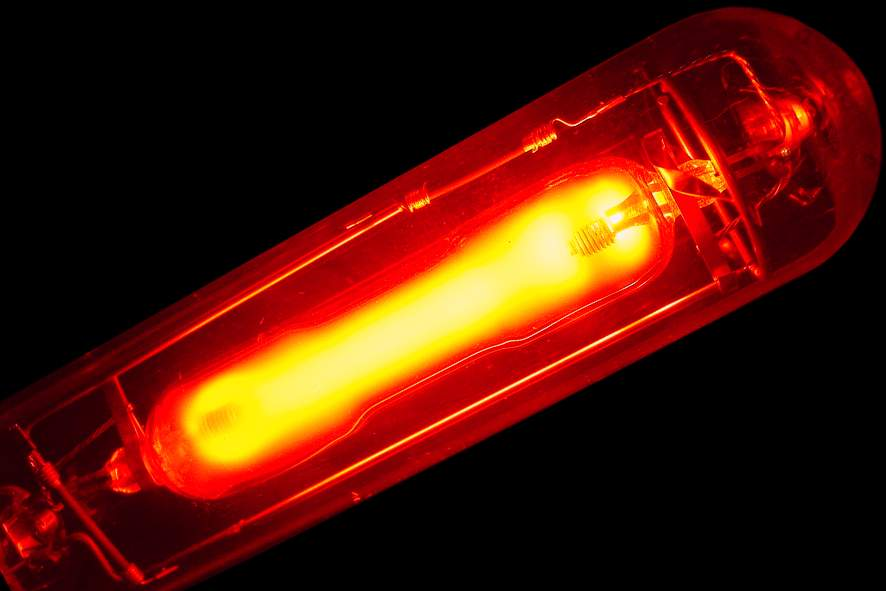
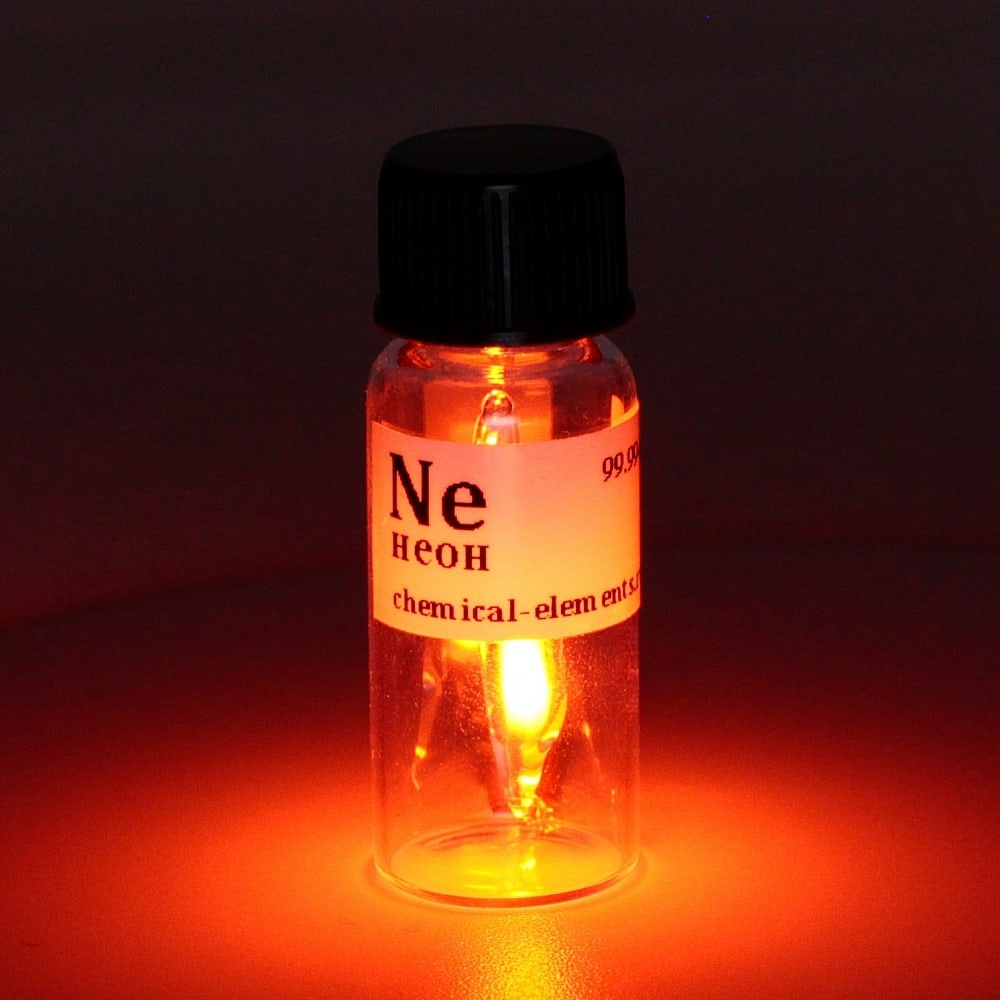

Неон
Нео́н (химический символ — Ne, от лат. Neon) — химический элемент 18-й группы (по устаревшей классификации — главной подгруппы восьмой группы, VIIIA) второго периода периодической системы Д. И. Менделеева, с атомным номером 10.Пятый по распространённости элемент Вселенной после водорода, гелия, кислорода и углерода.Простое вещество неон — это инертный одноатомный газ без цвета и запаха.
Открыт в 1898 г. У. Рамзаем и английским химиком М. Траверсом при исследовании легколетучей фракции жидкого воздуха.

Неон химически инертен; образует электронно-возбуждённые эксимерные молекулы (например, NeF*), на переходах которых из метастабильного состояния в несвязанное генерируется лазерное излучение (105 нм для NeF*). Неон получают при низкотемпературной ректификации жидкого воздуха; объём мирового производства неона около 1 т/год (2013). Неоново-гелиевую смесь применяют в качестве рабочего тела в газовых лазерах (гелий-неоновый лазер), для заполнения газоразрядных источников света (неоновая лампа), ламп-индикаторов; жидкий неон – хладагент в криогенной технике.
В небольших количествах неон находится на Солнце, в некоторых звёздах и даже в атмосфере таких планет, как Нептун, Сатурн, Юпитер, Уран.На Земле неон мало распространён сам по себе. По чуть-чуть данный элемент содержится в земной коре и атмосфере. Неон получают из воздуха с помощью таких способов, как адсорбция и конденсация.

если в неоновой среде создать давление в 170 бар, смесь обладает наркотическим эффектом;
ученые не выявили соединений этого элемента с другими веществами;
высказана гипотеза, что неон может вступать в реакцию с фтором, но экспериментального подтверждения в настоящий период эта теория еще не получила;
возраст звезд по излучению из космоса можно установить использованием изотопа неона 21.
Также установлено, что этот газ выделяется в чистом виде из недр вулкана при извержениях, что свидетельствует о неизвестных скоплениях вещества глубоко под землей.